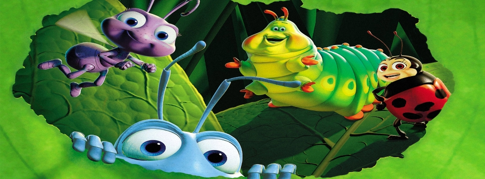

蟲蟲危機(A Bug's Life)
1998年11月25日

【片長時間】 約９４分鐘
【作品類別】 迪士尼/皮克斯動畫，長篇劇情動畫片
【原著取材】 原創故事，靈感來自於《伊索寓言》的《螞蟻與蚱蜢》
【內容介紹】本片是迪士尼與ＰＩＸＡＲ公司一同合作拍攝的第二部３Ｄ電腦動畫，前一部作品【玩具總動員】空前成功，這回他們則把背景換到昆蟲的世界！
本片迪士尼在宣傳時宣稱是一部“史詩鉅作”，劇情內容是敘述一群準備儲糧過冬的螞蟻，長期以來都遭到蚱蜢的掠奪與攻擊，眼看每年蚱蜢徵收糧食的季節又要來臨，螞蟻們辛苦地工作儲糧，但卻被一隻名叫 Flik 的螞蟻把一切都搞砸了！一切的努力又都要重來，Flik 於是心生一計，決定出外去找其他昆蟲一同來幫忙，希望能從此擺脫蚱蜢的威脅，但是沒想到，他後來卻陰錯陽差找來一群馬戲團蟲蟲！經過一番波折，最後他們終於還是合力趕走了惡劣的蚱蜢，Flik 也成為螞蟻王國的英雄。
本片的導演 John Lasseter 繼【玩具總動員】再度展現高度創意，並且坦承有一幕大鳥著火的場景靈感來自日本動畫大師宮崎駿作品【天空之城】。另外在本片的片尾，收錄有一段特別製作的ＮＧ片段，由昆蟲主角們假裝在拍片時遇到吃螺絲、撞牆等狀況，實在是十分暴笑！